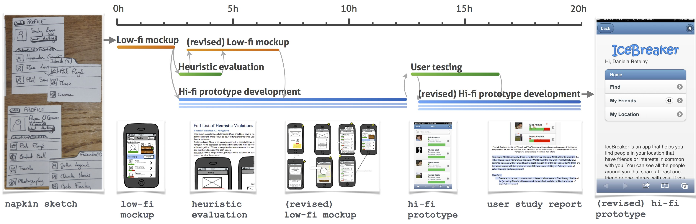

NomadFi

Links:
Overview:
NomadFi is a comprehensive fintech platform designed to provide users with seamless financial solutions through dynamic interfaces and advanced automation. The project focuses on creating an efficient user experience while automating backend processes to optimize performance and enhance functionality.
Project Highlights:
- Enhanced the fintech platform’s performance by integrating dynamic components and optimizing state management.
- Automated invoice data extraction and processing, reducing manual workload and increasing system efficiency.
- Delivered a user-centric experience through real-time data rendering and intuitive design.
Key Features:
- Dynamic User Interfaces: Designed and implemented modular React components for critical features such as the homepage, dashboard, and settings.
- State Management: Utilized React Hooks, Context, and Redux to manage state efficiently and deliver a responsive user experience.
- Real-Time API Integration: Integrated Spring Boot APIs to display personalized user data and ensure high performance.
- Invoice Automation: Developed an end-to-end OCR-based invoice processing system using Python and Spring Boot, automating the extraction of invoice data and integrating it into a structured database for credit risk assessment.
Tech Stack:
- Front-End: ReactJS, HTML, CSS
- Back-End: Spring Boot, Python
- Database: MySQL
- Tools and Libraries: React Hooks, Redux, OCR libraries, RESTful APIs
Applications:
- Automated Credit risk evaluation through automated invoice analysis and structured data insights.
- Comprehensive dashboard and tools for financial management tailored to user needs.